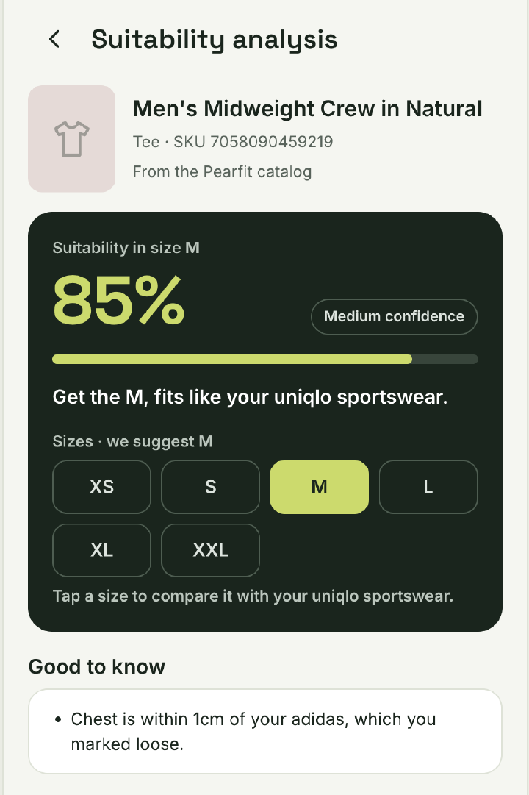

Free to try · works with your own wardrobe
The size that fits like your favorite shirt.
Compare any shirt to ones you own. Get the size, with a confidence level.

- Every answer shows a confidence level
- Missing measurements stay blank, never guessed
- Your wardrobe is saved only on your device
Try it with your own shirts.
Add shirts you own, pick a product, and get a size and how sure we are.
What Pearfit does for shoppers and for brands.
For shoppers
- Compared with a shirt you own: Each size of a shirt is measured against one the shopper already owns.
- No body scan: The shopper picks a shirt they own as the reference.
- Chest, length and sleeve: Compared in centimeters.
For brands
- A fit note for each size: How many reviews there are, and how many say it runs small, true to size, or large.
- Shrinkage and see-through fabric: Mentions are counted.
- One place for fit numbers: Each product’s numbers go into the same shared database, so everyone sees the same ones.
How a size answer is made.
- 01
We read a shirt’s size chart and what reviewers say about the fit.
- 02
We compare each size with a shirt you already own.
- 03
You get a size suggestion and how sure we are about it.
- 04
As more shirts and reviews are added, more products can be sized.
Start a 6-week pilot on one category
- We start with one product category. We read the reviews and size charts on your product pages for it.
- You get fit numbers for each size. What reviewers say about each size: runs small, true to size, or runs large.
- A size tool on your store comes later. This first step is the fit data. A size advisor on your own product pages is a later step.
Answers for brands and partners
What data does Pearfit need to launch a pilot?
Links to the product pages you want covered. We read the reviews and the size chart on those pages and keep what reviewers say about each size. A measurement the chart does not state stays blank.
How do shoppers tell Pearfit what clothes they already own?
The live demo on this page lets you type in your own shirts and compares them with a product we already have.
Does an AI model pick the size?
No. Fixed rules sort the reviews, not an AI model, and the size comes from comparing measurements. When a measurement is missing, it stays blank.
How do you measure ROI during the 6-week pilot?
The ROI calculator is a model you fill in. A pilot would compare your own fit-return rate before and after, using your orders.
How is shopper privacy handled?
The live demo sends your measurements to our size service only to work out the answer. Full review text is not kept in the shared database, only the fit numbers for each size.